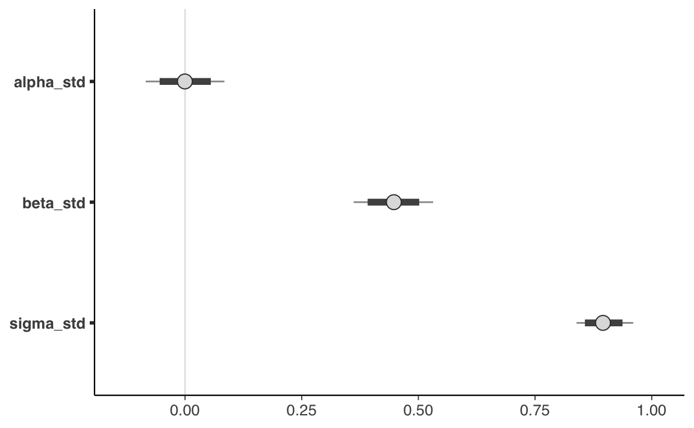

29 Inferenza sul modello lineare
Un modo per rappresentare l’incertezza dell’inferenza in un ottica bayesiana è quella di presentare graficamente la retta specificata dal modello di regressione lineare. Continuerò qui la discussione dell’esempio descritto nel Capitolo precedente, ovvero, userò i dati kid_score e i valori mom_iq centrati.
29.1 Rappresentazione grafica dell’incertezza della stima
Supponiamo (come indicato nel Capitolo precedente) di avere eseguito il campionamento MCMC mediante la seguente istruzione.
fit2 <- mod$sample(
data = data2_list,
iter_sampling = 4000L,
iter_warmup = 2000L,
seed = SEED,
chains = 4L,
refresh = 0
)Per creare una rappresentazione grafica della retta di regressione stimata dal modello bayesiano, insieme all’incertezza della stima, è necessario manipolare i dati contenuti nell’oggetto creato da mod$sample() che contiene i campioni a posteriori dei parametri del modello di regressione lineare, ovvero fit2.
Usando la funzione rstan::read_stan_csv() trasformo fit2 in un oggetto di formato stanfit.
output_stanfit <- rstan::read_stan_csv(fit2$output_files())Dall’oggetto output_stanfit estraggo i campioni a posteriori dei parametri \(\alpha\), \(\beta\) e \(\sigma\) con la funzione extract().
post <- rstan::extract(output_stanfit)L’oggetto post così creato è una lista.
class(post)
#> [1] "list"Esaminiamo il contenuto di post.
glimpse(post)
#> List of 7
#> $ alpha_std: num [1:16000(1d)] 0.0582 0.0407 -0.0828 0.0997 0.0886 ...
#> ..- attr(*, "dimnames")=List of 1
#> .. ..$ iterations: NULL
#> $ beta_std : num [1:16000(1d)] 0.421 0.494 0.457 0.496 0.491 ...
#> ..- attr(*, "dimnames")=List of 1
#> .. ..$ iterations: NULL
#> $ sigma_std: num [1:16000(1d)] 0.907 0.899 0.878 0.932 0.972 ...
#> ..- attr(*, "dimnames")=List of 1
#> .. ..$ iterations: NULL
#> $ alpha : num [1:16000(1d)] 88 87.6 85.1 88.8 88.6 ...
#> ..- attr(*, "dimnames")=List of 1
#> .. ..$ iterations: NULL
#> $ beta : num [1:16000(1d)] 0.573 0.672 0.622 0.675 0.668 ...
#> ..- attr(*, "dimnames")=List of 1
#> .. ..$ iterations: NULL
#> $ sigma : num [1:16000(1d)] 18.5 18.3 17.9 19 19.8 ...
#> ..- attr(*, "dimnames")=List of 1
#> .. ..$ iterations: NULL
#> $ lp__ : num [1:16000(1d)] -170 -169 -171 -172 -174 ...
#> ..- attr(*, "dimnames")=List of 1
#> .. ..$ iterations: NULLL’output di glimpse() ci dice che alpha è un vettore di 16,000 elementi. Ciascuno di questi elementi è un valore estratto a caso dalla distribuzione a posteriori del parametro \(\alpha\). È dunque possibile calcolare una stima puntuale della distribuzione a posteriori del parametro \(\alpha\) semplicemente trovando la media di tali valori.
mean(post$alpha)
#> [1] 86.7936Lo stesso si può dire di beta.
mean(post$beta)
#> [1] 0.6082648Per creare un diagramma a dispersione dei dati con sovrapposto il valore atteso della \(y\) (ovvero, la retta di regressione) usiamo la sintassi seguente.
tibble(
kid_score = df$kid_score,
mom_iq = df$mom_iq - mean(df$mom_iq)
) %>%
ggplot(aes(mom_iq, kid_score)) +
geom_point() +
geom_abline(
intercept = mean(post$alpha),
slope = mean(post$beta)
)Si noti l’uso della funzione geom_abline() che prende come argomenti l’intercetta e la pendenza di una retta. Nel caso presente, tali argomenti corrispondono a mean(post$alpha) e mean(post$beta), ovvero, specificano i valori a posteriori più plausibili dei parametri \(\alpha\) e \(\beta\).
Con le istruzioni precedenti abbiamo disegnato una singola retta. Ma una singola retta non ci fa capire qual è l’incertezza associata alle stime dei parametri \(\alpha\) e \(\beta\). Una tale incertezza può essere visualizzata tracciando molteplici rette, ciascuna delle quali definita da un diverso valore estratto a caso dalla distribuzione a posteriori dei parametri \(\alpha\) e \(\beta\).
Per fare ciò dobbiamo estrarre le informazioni richieste dall’oggetto output_stanfit che è stato creato. A tal fine possiamo usare, ad esempio, le funzioni del pacchetto tidybayes. Iniziamo a elencare i nomi degli oggetti contenuti in output_stanfit.
tidybayes::get_variables(output_stanfit)
#> [1] "alpha_std" "beta_std" "sigma_std" "alpha"
#> [5] "beta" "sigma" "lp__" "accept_stat__"
#> [9] "treedepth__" "stepsize__" "divergent__" "n_leapfrog__"
#> [13] "energy__"Vogliamo creare un DataFrame in formato tidy, cioè, tale per cui le osservazioni stanno sulle righe e le variabili stanno sulle colonne; una colonna per le stime a posteriori di \(\alpha\) e una colonna per le stime a posteriori di \(\beta\). Un tale risultato si ottiene con la funzione spread_draws().
draws <- output_stanfit %>%
spread_draws(beta, alpha)Esaminiamo l’oggetto draws.
draws %>%
head(10)
#> # A tibble: 10 × 5
#> .chain .iteration .draw beta alpha
#> <int> <int> <int> <dbl> <dbl>
#> 1 1 1 1 0.632 88.4
#> 2 1 2 2 0.491 87.5
#> 3 1 3 3 0.717 85.9
#> 4 1 4 4 0.478 87.5
#> 5 1 5 5 0.610 86.4
#> 6 1 6 6 0.570 86.7
#> 7 1 7 7 0.623 87.0
#> 8 1 8 8 0.616 87.2
#> # … with 2 more rowsL’oggetto draws contiene le stime a posteriori dei parametri \(\alpha\) e \(\beta\) nel formato desiderato. Possiamo ora generare un diagramma a dispersione con ggplot() a cui vengono aggiunte tutte le 16,000 rette di regressione definite da ciascuna coppia di valori \(\hat{\alpha}\) e \(\hat{\beta}\) contenuti nelle righe del DataFrame draws.
tibble(
kid_score = df$kid_score,
mom_iq = df$mom_iq - mean(df$mom_iq)
) %>%
ggplot(aes(mom_iq, kid_score)) +
geom_point() +
geom_abline(
data = draws,
aes(intercept = alpha, slope = beta),
size = 0.2, alpha = 0.01, color = "darkgray"
) +
geom_abline(
intercept = mean(post$alpha),
slope = mean(post$beta)
) +
labs(
x = "Quoziente di intelligenza della madre",
y = "Quoziente di intelligenza del bambino"
)Il risultato cercato si ottiene (disegnare molteplici rette ciascuna definita da un valore casuale dalla distribuzione a posteriori dei parametri \(\alpha\) e \(\beta\)) mediante la seguente porzione del codice \(\mathsf{R}\).
geom_abline(
data = draws,
aes(intercept = alpha, slope = beta),
size = 0.2, alpha = 0.01, color = "darkgray"
)L’argomento grafico alpha = 0.01 passato a geom_abline() specifica la trasparenza del segmento che rappresenta ciascuna retta. Ho usato un valore molto basso per questo argomento per fare in modo che, anche sovrapponendo 16,000 rette, si produca comunque ancora un certo grado di trasparenza.
Il grafico mostra che le rette di regressione costruite estraendo a caso valori dalla distribuzione a posteriori dei parametri \(\alpha\) e \(\beta\) sono molto simili tra loro. Ciò significa che, se combiniamo le informazioni fornite dai dati con le nostre credenza precedenti (qui, dei prior poco informativi), allora dobbiamo concludere che l’incertezza relativa alla dipendenza lineare del quoziente di intelligenza del bambino da quello della madre è decisamente piccola. In altre parole, siamo molto sicuri che c’è una associazione lineare positiva tra le due variabili: in media il QI dei figli è positivamente associato al QI della madre.
Si presti attenzione al fatto che il modello statistico ci conduce a tale conclusione: siamo sicuri dell’esistenza di un’associazione positiva tra il QI dei figli e il QI della madre. Ma il modello statistico non ci dice nulla sulle cause di questa associazione: ci dice soltanto che le due variabili tendono a covariare. Non ci dice che il QI della madre è la “causa” del QI del figlio. Questo è un argomento su cui è stata fatta molta ricerca (e di ciò qui non diremo nulla). Ma, al di là dei risultati di tali ricerche, se consideriamo solo il risultato del modello statistico qui esaminato, nulla si può concludere sui rapporti di causa/effetto tra QI della madre e QI del figlio. La presenza di un’associazione statistica, infatti, è condizione necessaria ma non sufficiente per potere affermare l’esistenza di un nesso causale.
29.2 Intervalli di credibilità
Abbiamo visto come l’incertezza sulla stima dei parametri possa essere espressa graficamente. In alternativa, l’incertezza inferenziale sui parametri può essere descritta mediante gli intervalli di credibilità, ovvero gli intervalli che contengono la quota desiderata (es., il 95%) della distribuzione a posteriori.
Per l’esempio che stiamo discutendo, gli intervalli di credibilità (a code uguali) al 95% si ottengono nel modo seguente:
rstantools::posterior_interval(
as.matrix(output_stanfit),
prob = 0.95
)
#> 2.5% 97.5%
#> alpha_std -0.08427372 0.08441589
#> beta_std 0.36136782 0.53165187
#> sigma_std 0.83902970 0.96033440
#> alpha 85.07713000 88.52020750
#> beta 0.49171840 0.72342520
#> sigma 17.12519250 19.60110750
#> lp__ -173.15907500 -168.54400000Un grafico che, nel caso dei dati standardizzati, riporta l’intervallo di credibilità al livello di probabilità desiderato per i parametri \(\alpha\), \(\beta\) e \(\sigma\) si ottiene con l’istruzione seguente.
output_stanfit %>%
mcmc_intervals(
pars = c("alpha_std", "beta_std", "sigma_std"),
prob = 0.8,
prob_outer = 0.95
)
Gli intervalli di massima densità si trovano nel modo seguente.
bayestestR::hdi(output_stanfit, ci = 0.95)
#> Highest Density Interval
#>
#> Parameter | 95% HDI
#> --------------------------
#> alpha_std | [-0.08, 0.08]
#> beta_std | [ 0.36, 0.53]
#> alpha | [85.08, 88.52]
#> beta | [ 0.49, 0.72]Quando la distribuzione a posteriori dei parametri è simmetrica, i due tipi di intervalli producono, all’atto pratico, risultati equivalenti.
29.2.1 Quale soglia usare?
Ripeto c’è niente di “magico” o necessario relativamente al livello di 0.95: il valore 0.95 è arbitrario. È quello utilizzato nelle pubblicazioni scientifiche, di consuetudine. Almeno in psicologia. In fisica, ad esempio, si usa un intervallo molto più grande.
Kennedy-Shaffer (2019) descrivono l’origine storica di questa scelta. Nel 1925 Ronal Fisher pubblicò la prima edizione della sua influente opera Statistical Methods for Research Workers. In tale testo troviamo il seguente passaggio:
The value for which P=.05, or 1 in 20, is 1.96 or nearly 2; it is convenient to take this point as a limit in judging whether a deviation is to be considered significant or not. Deviations exceeding twice the standard deviation are thus formally regarded as significant. Using this criterion we should be led to follow up a negative result only once in 22 trials, even if the statistics are the only guide available. Small effects would still escape notice if the data were insufficiently numerous to bring them out, but no lowering of the standard of significance would meet this difficulty (Fisher, 1925, p. 47)
Questo paragrafo rende immediatamente evidente il motivo per cui Fisher afferma che il valore 0.05 è conveniente: è più o meno equivalente alla probabilità di trovarsi a più di due deviazioni standard dalla media di una variabile casuale normalmente distribuita. In questo modo, 0.05 può essere visto non come un numero dotato in un qualche significato importante, ma solo come un valore che risultava dalla necessità di facilità di calcolo, prima che i computer rendessero obsolete le tabelle e le approssimazioni. In seguito, nel discutere le applicazioni statistiche della distribuzione \(\chi^2\), Fisher osserva che
[w]e shall not often be astray if we draw a conventional line at .05, and consider that higher values of \(\chi^2\) indicate a real discrepancy (Fisher, 1925, p. 79).
Sulla base di queste affermazioni di Fisher, la soglia del 0.95 è diventata la consuetudine nella comunità scientifica – o almeno, in parte di essa.
Ma sono ovviamente possibili tantissime altre soglie per quantificare la nostra incertezza: alcuni ricercatori usano il livello di 0.89, altri quello di 0.5. Se l’obiettivo è quello di descrivere il livello della nostra incertezza relativamente alla stima del parametro, allora dobbiamo riconoscere che la nostra incertezza è descritta dall’intera distribuzione a posteriori. Per cui il metodo più semplice, più diretto e più completo per descrivere la nostra incertezza rispetto alla stima dei parametri è quello di riportare graficamente tutta la distribuzione a posteriori. Per l’esempio presente, una rappresentazione della distribuzione a posteriori dei parametri del modello si ottiene, ad esempio, con la seguente istruzione.
In alternativa possiamo usare la seguente istruzione.
mcmc_areas(
fit2$draws(c("alpha_std", "beta_std", "sigma_std")),
prob = 0.8,
prob_outer = 0.95
)29.3 Test di ipotesi
È facile valutare ipotesi direzionali usando Stan. Per esempio, chiediamoci quale sia la probabilità \(P(\hat{\beta}_1 > 0)\).
Per trovare la probabilità richiesta possiamo usare il vettore post$beta il quale contiene 16,000 valori presi a caso dalla distribuzione a posteriori \(p(\beta \mid y)\). Nell’istruzione seguente, post$beta > 0 valuta se ciascun elemento di post$beta soddisfi la condizione logica specificata, ritornando TRUE (codificato con 1) o FALSE (codificato con 0) a seconda che la condizione logica sia vera o falsa. L’istruzione sum(post$beta > 0) conta dunque il numero di volte in cui la condizione è soddisfatta, mentre length(post$beta) è uguale a 16,000. La proporzione così determinata è una stima empirica della probabilità cercata.
L’evento complementare, ovvero, la probabilità \(P(\hat{\beta}_1 < 0)\) è dunque dato dalla seguente istruzione.
Ciò significa che, relativamente alla presenza di un’associazione lineare positiva tra QI della madre e QI del figlio, la forza dell’evidenza è enorme.
29.4 Modello lineare robusto
Spesso i ricercatori devono affrontare il problema degli outlier (osservazioni anomale): in presenza di outlier, un modello statistico basato sulla distribuzione gaussiana produce delle stime distorte dei parametri (ovvero stime che non si generalizzano ad altri campioni di dati). Il metodo tradizionale per affrontare questo problema è quello di eliminare gli outlier prima di eseguire l’analisi statistica. Il problema di questo approccio, però, è che il criterio utilizzato per eliminare gli outlier, quale esso sia, è arbitrario; dunque, usando criteri diversi per la rimozione di outlier, i ricercatori finiscono per trovare risultati diversi.
Questo problema trova una semplice soluzione nell’approccio bayesiano. Il modello lineare che abbiamo dicusso finora ipotizza una specifica distribuzione degli errori, ovvero \(\varepsilon \sim \mathcal{N}(0, \sigma_{\varepsilon})\). In un modello formulato in questi termini, la presenza di solo un valore anomalo e influente ha un effetto drammatico sulle stime dei parametri.
Per fare un esempio, introduciamo un singolo valore anomalo e influente nel set dei dati dell’esempio che stiamo discutendo:
df2 <- df
df2$kid_score[434] <- -500
df2$mom_iq[434] <- 140Per comodità, calcoliamo le stime di \(\alpha\) e \(\beta\) con il metodo dei minimi quadrati (tali stime sono simili a quelle che si otterrebbero con un modello bayesiano gaussiano che impiega distribuzioni a priori debolmente informative). Sappiamo che, nel campione originale di dati, \(\hat{\beta} \approx 0.6\). In presenza di un solo outlier, la stima di \(\beta\) viene drammaticamente ridotta.
In generale, però, non è necessario assumere \(\varepsilon \sim \mathcal{N}(0, \sigma_{\varepsilon})\). È altrettanto valido un modello che ipotizza una diversa distribuzione per gli errori come, ad esempio, la distribuzione \(t\) di Student con un piccolo numero di gradi di libertà. Una caratteristica della \(t\) di Student è che le code della distribuzione contengono una massa di probabilità maggiore della distribuzione gaussiana. Ciò fornisce alla \(t\) di Student la possibilità di “rendere conto” della presenza di osservazioni lontane dalla media della distribuzione. In altri termini, se in modello lineare usiamo la \(t\) di Student quale distribuzione degli errori, la presenza di outlier avrà un’influenza minore sulle stime dei parametri di quanto avviene nel tradizionale modello lineare gaussiano.
Per verificare questa affermazione, modifichiamo il codice Stan usato in precedenza in modo tale da ipotizzare che \(y\) segua una distribuzione \(t\) di Student con un numero \(\nu\) gradi di libertà stimato dal modello: student_t(nu, mu, sigma).1
modelString <- "
data {
int<lower=0> N;
vector[N] y;
vector[N] x;
}
transformed data {
vector[N] x_std;
vector[N] y_std;
x_std = (x - mean(x)) / sd(x);
y_std = (y - mean(y)) / sd(y);
}
parameters {
real alpha_std;
real beta_std;
real<lower=0> sigma_std;
real<lower=1> nu; // degrees of freedom is constrained >1
}
model {
alpha_std ~ normal(0, 1);
beta_std ~ normal(0, 1);
sigma_std ~ normal(0, 1);
nu ~ gamma(2, 0.1); // Juárez and Steel(2010)
y_std ~ student_t(nu, alpha_std + beta_std * x_std, sigma_std);
}
generated quantities {
real alpha;
real beta;
real<lower=0> sigma;
alpha = sd(y) * (alpha_std - beta_std * mean(x) / sd(x)) + mean(y);
beta = beta_std * sd(y) / sd(x);
sigma = sd(y) * sigma_std;
}
"
writeLines(modelString, con = "code/simpleregstdrobust.stan")Costruiamo la lista dei dati usando il data.frame df2 che include l’outlier:
Adattiamo il modello lineare robusto ai dati:
file <- file.path("code", "simpleregstdrobust.stan")
mod <- cmdstan_model(file)
fit4 <- mod$sample(
data = data3_list,
iter_sampling = 4000L,
iter_warmup = 2000L,
seed = SEED,
chains = 4L,
refresh = 0
)Se esaminiamo le stime dei parametri notiamo che la stima di \(\beta\) non è stata influenzata dalla presenza di un’osservazione anomala e influente:
fit4$summary(c("alpha", "beta", "sigma", "nu"))
#> # A tibble: 4 × 10
#> variable mean median sd mad q5 q95 rhat ess_bulk ess_tail
#> <chr> <dbl> <dbl> <dbl> <dbl> <dbl> <dbl> <dbl> <dbl> <dbl>
#> 1 alpha 87.8 87.8 0.901 0.898 86.3 89.3 1.00 14740. 12422.
#> 2 beta 0.602 0.602 0.0589 0.0587 0.505 0.699 1.00 14903. 11582.
#> 3 sigma 15.9 15.9 0.800 0.803 14.6 17.2 1.00 12993. 11619.
#> 4 nu 5.58 5.46 1.15 1.09 3.93 7.64 1.00 12998. 11288.I risultati mostrano come il modello lineare robusto non risente della presenza di outlier (almeno nel caso presente).
Commenti e considerazioni finali
Nell’approccio bayesiano possiamo rappresentare l’incertezza delle nostre credenze a posteriori in due modi: mediante la rappresentazione grafica dell’intera distribuzione a posteriori dei parametri o mediante l’uso degli intervalli di credibilità. Un bonus della discussione del presente Capitolo è quello di mostrare come il modello lineare tradizionale (che assume \(\varepsilon \sim \mathcal{N}(0, \sigma_{\varepsilon})\)) possa essere facilmente esteso nei termini di un modello robusto il quale offre una semplice soluzione al problema di ridurre l’effetto della presenza di osservazioni anomale e influenti.
È equivalente scrivere \(y_i = \mu_i + \varepsilon_i\), dove \(\mu_i = \alpha + \beta x_i, \varepsilon_i \sim \mathcal{N}(0, \sigma_\varepsilon),\) oppure \(y_i \sim \mathcal{N}(\mu_i, \sigma_\varepsilon).\)↩︎